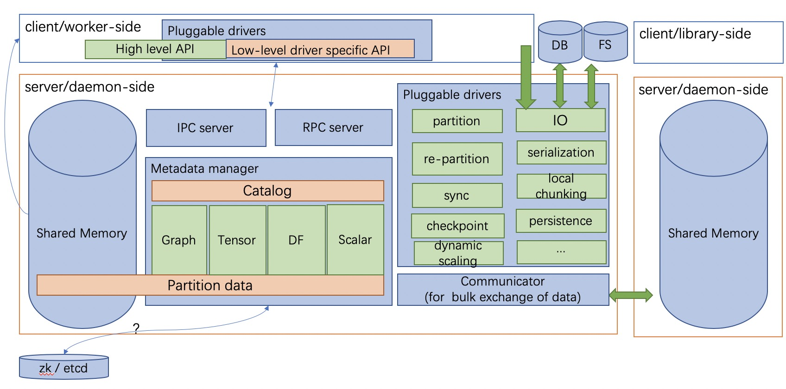

Diving into vineyard¶
Motivation¶
Existing big data practice usually adopts distributed databases or file systems as the intermediate storage to share immutable distributed data between heterogeneous computation systems that are involved in a big data task. This brings two significant overheads:
The structural data is transformed from/to the external data storage format (e.g., tables in relational databases, files in HDFS) back and forth in the beginning/end of each computation step, meanwhile, the structure and operations of the data are dismissed.
Saving/Loading the data to/from the external storage requires lots of memory-copies and disk-IO costs, which becomes the bottleneck of the entire process in more and more cases as the efficiency of the computation systems are growing rapidly these years.
In addition, the lack of managing the data uniformly through the big data task obstructs the application of modern techniques such as data monitoring, data-aware optimization, and fault-tolerance, thus, further decreases the productive efficiency.
Overview¶
To address this issue, vineyard provides:
In-memory distributed data sharing in a zero-copy fashion to avoid introducing extra I/O costs by exploiting a shared memory manager derived from plasma.
In general, vineyard servers are launched as daemons in every machine of the underlying cluster to make up a vineyard cluster, and each vineyard instance will allocate a shared memory pool to store the corresponding partition of the distributed data, and the meta data of the distributed data will be shared across the vineyard cluster via the backend key-value store, e.g., etcd or zookeeper.

For example, a distributed tensor is stored in the vineyard cluster as illustrated above. Each partition is stored in the corresponding vineyard instance, while the meta data, e.g., the shape of the tensor is stored in the backend key-value server of vineyard, i.e., the etcd server.
To reuse the distributed tensor in parallel processing, each process will first establish a vineyard client connecting to the corresponding vineyard instance on the same machine, and then get the meta data of the distributed tensor. Finally based on the meta data, each process can get the corresponding partition of the distributed tensor from the vineyard instance via memory mapping in a zero-copy fashion, and start to use the data for computation.
Built-in out-of-box high-level abstraction to share the distributed data with complex structures (e.g., distributed graphs) with nearly zero extra development cost, while the transformation costs are eliminated.
For example, a distributed graph is composed of fragments that are stored distributedly over the vineyard cluster, and each fragment consists of vertices, edges, data on vertices, data on edges, indices (e.g., the CSR indexing), vertex maps and so on. Unlike the external storage approach where fragments are transformed into adjacent matrix to fit into a table schema in the database, vineyard stores the fragment with the structure, so that when we use the graph, the indices can be directly reused to facilitate the graph traversal. Furthermore, the high-level abstracted graph traversal operations are built-in with the vineyard distributed graph, as a result, nearly zero extra development are required to reuse the data.
Architecture¶
The figure demonstrates the architecture of vineyard.
On the server/daemon side (i.e., the aforementioned vineyard instance), there are four major components:
The shared memory is the memory space in vineyard that shares with vineyard clients via the UNIX domain socket by memory mapping. As we mentioned before, the partitions of the distributed data are living in the shared memory of the corresponding vineyard instance in the cluster.
The metadata manager provides management for the metadata of the data stored in vineyard. It keeps the structures, layouts and properties of the data to provide high-level abstractions (e.g., graphs, tensors, dataframes). The metadata managers in a vineyard cluster communicate with each other through the backend key-value store, e.g., etcd server, to keep the consistency of the distributed data stored in vineyard.
The pluggable drivers assign specific functionalities to certain types of data in vineyard. In particular, I/O drivers sync with external storages such as databases and file systems to read data into and write data from vineyard, while partition and re-partition drivers reorganize the distributed graphs stored in vineyard to balance the workload. Note that the drivers usually employs the low-level API for delicate operations.
The ipc/rpc servers handle the ipc/rpc connections respectively from vineyard clients and the communicator supports bulk exchange of data between vineyard instances. In particular, the client can get the metadata of the data stored in vineyard through both ipc and rpc connections. But to get the data partition, the client has to connect to the vineyard instance through UNIX domain socket, this is because, the data sharing is via the system call of memory mapping, thus requires the client to stay in the same machine of the vineyard instance.
On the other hand, the client side consists of both the high-level APIs (e.g., edge traversals for distributed graphs) to easily reuse the data in vineyard and the low-level APIs for specific drivers to access the vineyard instance in a more delicate fashion.
Vineyard Object Design¶
Vineyard represents all kinds of data as vineyard objects, for any vineyard object, it consists of two parts:
A set of blobs where the payload of the data lives in;
A hierarchical meta tree which describes the type, layout and properties of the data.
The decoupling design of data payload and data layout brings three benefits:
The payload is stored locally in each vineyard instance, while the meta data is shared among all the vineyard instances across the cluster. This significantly reduces the costs to keep the distributed data consistent.
It makes vineyard objects self-interpreted, since the meta data fully determines how the object should be resolved. This not only brings the consistency in semantics when sharing vineyard objects between different systems and different programming languages, but also allows users to store complex data structures in high-level abstraction, such as graphs in CSR model directly in vineyard, without serializing/deserializing the object every time saving/loading it from vineyard.
It facilitates the exploiting of data-aware scheduling techniques, e.g., when we process a graph in vineyard, we can easily access the meta tree of the graph to see how large each partitioned fragment is without touching the real vertices and edges of the graph, as such, we can assign precise amount of computation resources for each fragment to achieve overall performance enhancement.
In particular, for the meta data and methods of vineyard objects, vineyard employs two design choices:
The composable design on vineyard objects to facilitate distributed data management;
The extensible design on methods of vineyard objects to enable flexible data sharing between different computation systems with nearly zero extra development cost.
Distributed Object¶
Vineyard supports store very large objects across many nodes in a cluster and allows user programs to treat those as a whole. Data are shaded to many machines and no replication happens.
Taking DataFrame as an example, in real world cases the table may consists billions of rows
and cannot be fit into a single machine. Under such conditions, the dataframe could be split
along the index axis or column axis and every vineyard node holds a subset of chunks. Vineyard
still provides a logical view about the complete dataframe and allows distributed computation
engines like Mars and GraphScope to process such data structures as a whole.
Composable Design¶
The composition mechanism applies as the hierarchical tree structure of the meta data of vineyard objects. The root meta data of a complex object stores the links to the root meta data of its components, and by traversing the links recursively, a complete meta tree is produced for the complex object.
For example, a distributed graph is composed of partitioned graph fragments, while a graph fragment is composed of vertices and edges within that fragment. Recall the decoupling design of payload and layout of vineyard objects, in a graph fragment, the vertices and edges within the fragment is stored locally in the corresponding vineyard instance for the partition, meanwhile, the meta data (e.g., partition index, number of vertices, and number of edges) are stored in the backend key-value store.
To save a distributed graph, we first save the partitioned fragments in each vineyard instance, and share their meta data in the backend key-value store, and then we can create the distributed graph by creating the root meta data that contains the links to the root meta data of the fragments in an efficient fashion.
Extensible Design¶
Vineyard employs the extensible design concept of registry mechanism to facilitate users transplanting their data structures into vineyard.
In particular, our extensible design on builders, resolvers and drivers, allows users to build, resolve and share their data structures easily through different systems and paradigms respectively, and the registry mechanism is so basic that even the core data structures and drivers in vineyard also follows the same design.
So what is the registry mechanism?
In general, the registry mechanism decouples the methods from the definition of vineyard data types. For builders and resolvers, it means users can flexibility register different implementation in different languages to build and resolve the same vineyard data type, which makes the data available to share between different systems and paradigms, and makes it possible to exploit native language optimizations.
On the other hand, for drivers, the registry mechanism allows users to flexibly plug-in functionality methods in different languages for vineyard data types, which assigns required capability to the data types along with the data analytical process.
Further more, the registered methods can be implemented and optimized in accordance with specific data analytical tasks for further efficiency augmentation.
Implementation Details¶
Vineyard object¶
As we mentioned before, for each object in vineyard, it consists of two parts:
The data payload stored in the corresponding vineyard instance locally
The hierarchical meta data shared across the vineyard cluster
In particualr, Blob is the unit where the data payload lives in a vineyard
instance.
A blob object holds a segment of memory in the bulk store of the vineyard
instance, so that users can save their local buffer into a blob and
get the blob later in another process in a zero-copy fashion through
memory mapping.
>>> payload = b"Hello, World!"
>>> blob_id = client.put(payload)
>>> blob = client.get_object(blob_id)
>>> print(blob.typename, blob.size, blob)
vineyard::Blob 28 Object <"o800000011cfa7040": vineyard::Blob>
On the other hand, the hierarchical meta data of vineyard objects are shared across the cluster. In the following example, for simplicity, we launch a vineyard cluster with two vineyard instances in the same machine, although in practice, these vineyard instances are launched distributively on each machine of the cluster.
$ vineyardd --socket /var/run/vineyard.sock1
$ vineyardd --socket /var/run/vineyard.sock2
Then we can create a distributed pair of arrays in vineyard with the
first array stored in the first vineyard instance which listens to ipc_socket
/var/run/vineyard.sock1, and the second array stored in the second instance
listening to ipc_socket /var/run/vineyard.sock2.
>>> import numpy as np
>>> import vineyard
>>> import vineyard.data.tensor
>>> # build the first array in the first vineyard instance
>>> client1 = vineyard.connect('/var/run/vineyard.sock1')
>>> id1 = client1.put(np.zeros(8))
>>> # build the second array in the second vineyard instance
>>> client2 = vineyard.connect('/var/run/vineyard.sock2')
>>> id2 = client2.put(np.ones(4))
>>> # build the pair from client1
>>> obj1 = client1.get_object(id1)
>>> obj2 = client2.get_object(id2)
>>> id_pair = client1.put((obj1, obj2))
>>> # get the pair object from client2
>>> obj_pair = client2.get_object(id_pair)
>>> print(obj_pair.first.typename, obj_pair.first.size(), obj_pair.second.size())
vineyard::Array 8 4
>>> # get the pair value from client2
>>> value_pair = client2.get(id_pair)
>>> print(value_pair)
(None, [1, 1, 1, 1])
Here we can get the meta data of the pair object from client2
though client1 created it, but we can’t get the payload of the
first element of the pair from client2, since it is stored locally
in the first vineyard instance.
Builder and resolver¶
As we shown above, vineyard allows users to register builders/resolvers to build/resolve vineyard objects from/to the data types in the client side based on the computation requirements.
Suppose pyarrow types are employed in the context, then we can define the builder and
resolver between vineyard::NumericArray and pyarrow.NumericArray as follows:
>>> def numeric_array_builder(client, array, builder):
>>> meta = ObjectMeta()
>>> meta['typename'] = 'vineyard::NumericArray<%s>' % array.type
>>> meta['length_'] = len(array)
>>> meta['null_count_'] = array.null_count
>>> meta['offset_'] = array.offset
>>>
>>> null_bitmap = buffer_builder(client, array.buffers()[0], builder)
>>> buffer = buffer_builder(client, array.buffers()[1], builder)
>>>
>>> meta.add_member('buffer_', buffer)
>>> meta.add_member('null_bitmap_', null_bitmap)
>>> meta['nbytes'] = array.nbytes
>>> return client.create_metadata(meta)
>>> def numeric_array_resolver(obj):
>>> meta = obj.meta
>>> typename = obj.typename
>>> value_type = normalize_dtype(re.match(r'vineyard::NumericArray<([^>]+)>', typename).groups()[0])
>>> dtype = pa.from_numpy_dtype(value_type)
>>> buffer = as_arrow_buffer(obj.member('buffer_'))
>>> null_bitmap = as_arrow_buffer(obj.member('null_bitmap_'))
>>> length = int(meta['length_'])
>>> null_count = int(meta['null_count_'])
>>> offset = int(meta['offset_'])
>>> return pa.lib.Array.from_buffers(dtype, length, [null_bitmap, buffer], null_count, offset)
Finally, we register the builder and resolver for automatic building and resolving:
>>> builder_ctx.register(pa.NumericArray, numeric_array_builder)
>>> resolver_ctx.register('vineyard::NumericArray', numeric_array_resolver)
There are cases where we have more than one resolvers or builders for a certain type,
e.g., the vineyard::Tensor object can be resolved as numpy.ndarray or
xgboost::DMatrix. We could have
def numpy_resolver(obj):
...
default_resolver_context.register('vineyard::Tensor', numpy_resolver)
and
def xgboost_resolver(obj):
...
default_resolver_context.register('vineyard::Tensor', xgboost_resolver)
at the same time. The stackable resolver_context could help there,
with resolver_context({'vineyard::Tensor', xgboost_resolver}):
...
Assuming the default context resolves vineyard::Tensor to numpy.ndarray,
inside the with resolver_context the vineyard::Tensor will be resolved
to xgboost::DMatrix, and after exiting the context the global environment
will be restored back as default.
The with resolver_context is nestable as well.
Driver¶
As we shown in the getting-started, the open function in vineyard can open a local file as a stream
for consuming, and we notice that the path of the local file is headed with the
scheme file://.
Actually, vineyard supports several different types of data
source, e.g., kafka:// for kafka topics. The functional methods to open different data sources as
vineyard streams are called drivers in vineyard. They are registered to
open for specific schemes, so that when open is invoked, it will dispatch the
corresponding driver to handle the specific data source according to the scheme of
the path.
The following sample code demonstrates the dispatching logic in open, and the
registration examples.
>>> @registerize
>>> def open(path, *args, **kwargs):
>>> scheme = urlparse(path).scheme
>>> for reader in open.__factory[scheme][::-1]:
>>> r = reader(path, *args, **kwargs)
>>> if r is not None:
>>> return r
>>> raise RuntimeError('Unable to find a proper IO driver for %s' % path)
>>> # different driver functions are registered as follows
>>> open.register('file', local_driver)
>>> open.register('kafka', kafka_driver)
Most importantly, the registration design allows users to register their own
drivers to registerized vineyard methods using .register, which prevents
major revisions on the processing code to fulfill customized computation requirements.
Features and Limitations¶
Targeted design for distributed data sharing in big data tasks¶
By examining the practice of big data tasks such as numeric computing, machine learning and graph analysis carefully, we summarize that the data involved has four properties:
Distributed and each partitioned fragment usually fits into memory;
Immutable, i.e., never modified after creation;
With complex structure, e.g., graph in CSR format;
Required to share between different computation systems and programming languages.
Thus vineyard is designed accordingly with:
Composable design on vineyard objects;
Immutable zero-cost in-memory data sharing via memory mapping;
Out-of-box high-level data abstraction for complex data structures;
Extensible design on builder/resolver/driver for flexible crossing-system and crossing-language data sharing.
In general, the design choices of vineyard are fully determined on coping the difficulties in handling large-scale distributed data in practice.
Out-of-box high-level data abstraction¶
Vineyard objects are stored with structures, and high-level abstractions. For instance, a graph with CSR format in vineyard stores the index as long as the vertices and edges, so that operations like edge iteration based on the index can be provided. Thus, users don’t have to implement the index-building function and edge iterators by themselves, which is usually required in the existing big data practice.
Zero-cost in-memory data sharing¶
Vineyard provides zero-cost data sharing by memory-mapping, since data objects in vineyard are immutable. When the object is created, we allocate blobs in vineyard to store the data payload, on the other hand, when getting the object, we map the blob from the vineyard instance into the application process with inter-process memory mapping approaches, so that no memory copy is involved in sharing the data payload.
Convinient data integration¶
The extensive design on builder/resolver/driver allows convenient extension of existing vineyard objects to different programming languages. Moreover, with codegen tools in vineyard, makes it possible for users to transplant their data structures into vineyard with only a few annotations.
Data orchestration in a python notebook¶
Using vineyard as the common data orchestration engine through the end-to-end big data processing, users can hold large-scale distributed data as variables of vineyard objects in python. Thus, as long as the computation modules involved provides python API, users can write down the entire processing pipeline in a python notebook. By running the python script, users can manage trillions of data and different computation systems in the background distributedly across the cluster.
NOT for mutable objects¶
Once a vineyard object is created and sealed in the vineyard instance, it becomes immutable and can NOT be modified anymore. Thus vineyard is not suitable to be utilized as a data cache to store mutable data that changes rapidly along the processing pipeline.
NOT for instant remote data partition accessing¶
The partitions of a distributed data are stored distributedly in corresponding vineyard instances of the cluster. Only the client on the same machine can access the data partition. In case to access a remote partition, data migration APIs of vineyard can be invoked to trigger migration process, but not for instant accessing.